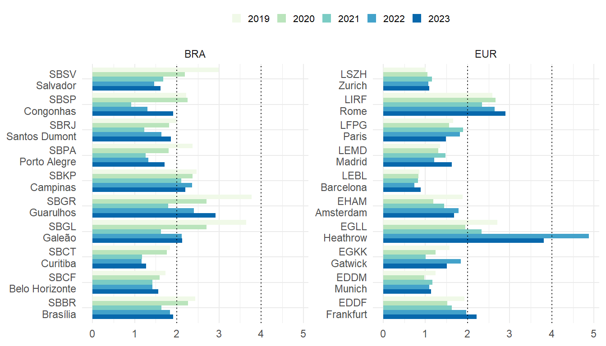
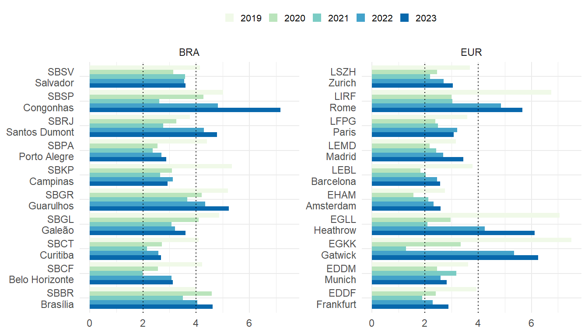
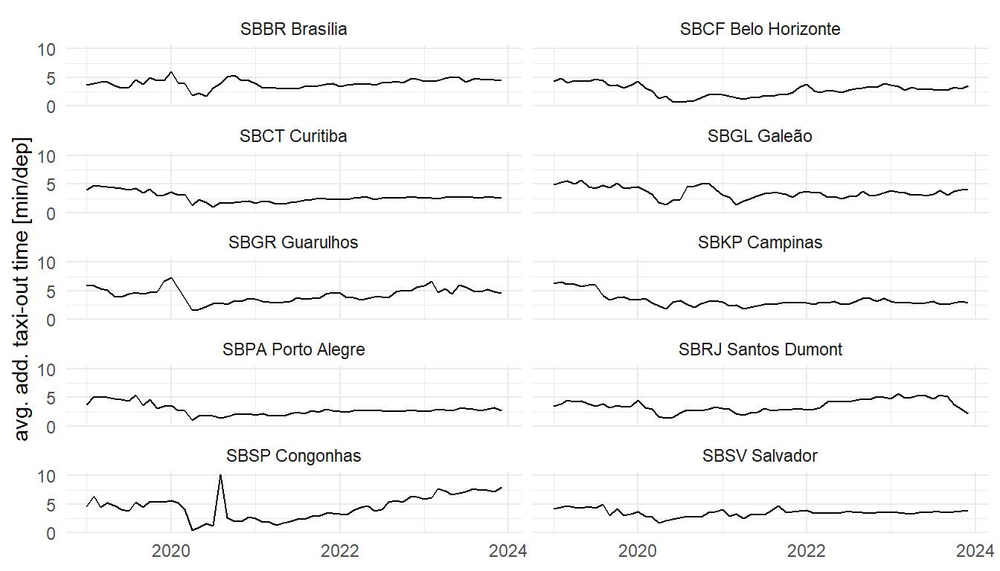
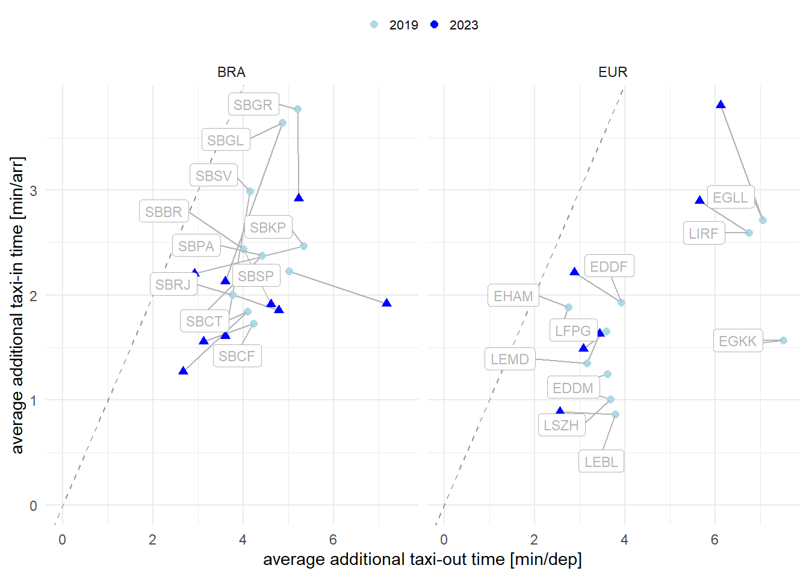
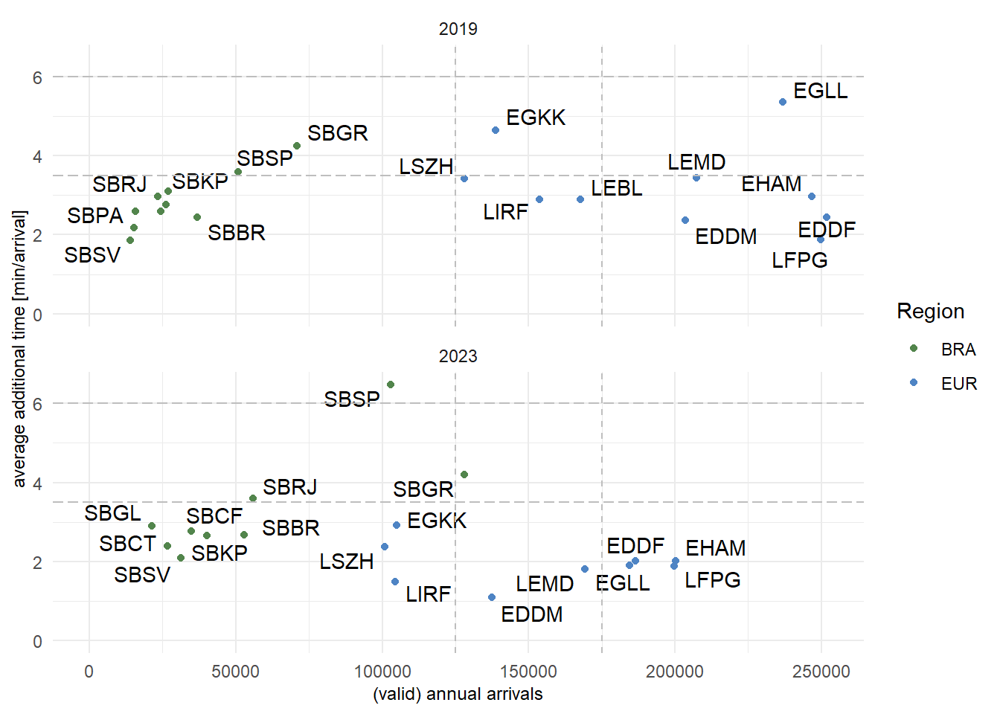

6 Efficiency
Operational efficiency is a critical component in assessing the management and execution of operations. It provides insights in the management of arrival and departure flows and the associated separation and synchronisation activities. Inefficiencies can have an impact on user operations in terms of delays or excessive fuel burn. In light of the previous chapters it is therefore interesting to study how the available capacity was utilised to service demand during the different flight phases.
The measures reported in this comparison report are based on the observed travel time for surface operations (i.e. taxi-in and taxi-out) and during the arrival phase. These travel times are compared with an associated reference time for a group of flights showing similar operational characteristics. The determined difference (i.e. additional time) measures the level of inefficiency. It must be noted that high performance operations will still yield a certain share of measured additional times. Operational efficiency is therefore aiming at minimising rather than eliminating these additional times as they cannot be zero.
6.1 Additional Taxi-In Time
The additional taxi-in time measures the travel time of an arriving aircraft from its touchdown, i.e. the actual landing time, to its stand/gate position, i.e. actual in-block time). This elapsed taxi-in time is compared to an anticipated reference time for aircraft arriving at the same runway and taxiing to the same (group of) stand/gate position(s). Research showed that the taxi-times are not dependent on the type of aircraft. The additional taxi-in time indicator provides a measure of the management of inbound surface traffic.
This report utilises another source for the movement times at Brazilian airports. Next to the actual taxi-times, the new data source provides also gate/stand information. Accordingly, additional taxi-times can be now determined on a per-gate basis. Previous studies did not support this higher level of granularity. The reader needs therefore to bear in mind that the reported results and trends differ from previous reports which were based on an airport-wide aggregation. The latter may be influenced by the predominant runway system configuration and frequently used stand/parking positions.
6.1.1 Annual Evolution of Additional Taxi-in Times
The annual development of the average additional taxi-in times at the study airports is depicted by Figure 6.1. The indicator varies across the different airports. A threshold of 2 minutes per arrival emerges as an upper bound for the taxi-in performance.
On average, taxi-in performance in Brazil ranged in 2022 well below this 2-minute-threshold for the majority of the airports. In general, taxi-in performance at Brazilian airports improved over the period 2019 to 20221. However, taxi-in performance decreased in 2023 at all studied airports. The pandemic-related drop in surface movements and pressure on the ground infrastructure is visible for the major hubs, i.e. Sao Paulo’s (SBGR), Rio de Janeiro’s Galeão (SBGL), Campinas (SBKP). Taxi-in performance at Campinas remained fairly constant ranging around 2.5 min/arr across the years with a discernible reduction in 2021. The picture at SBGL and SBGR is more varied. Taxi-in performance improved by about 1.5 min/arr comparing the pre-pandemic year 2019 with the performance observed in 2022. While the observed taxi-in inefficiencies in 2023 remained stable in SBGL, an increasing trend is observed in SBGR (which is the busiest airport in Brazil).
In Europe, the average additional taxi-in times ranged generally below the 2-minute-threshold for most of the study airports 2. Amongst the European study airports, Rome Fiumicino (LIRF) and London Heathrow (EGLL) showed regularly higher levels of inefficiency during the taxi-in phase. Taxi-in performance deteriorated in London Heathrow (EGLL) in 2022 ranging just under 5 minutes per arrival and exceeding the pro-COVID performance by about 2 minutes per incoming flight. In 2023, the average additional taxi-in improved by about 1 minute per arrival. Rome Fiumicino observed a stable taxi-in performance ranging above 2.5 minutes per arrival. This suggests that the complexity of the aerodrome layout requires a higher effort to deconflict arrivals from other arrivals or taxiing departures. Taxi-in performance in 2023 dropped further at LIRF to just under 3 minutes per arrival. Several airports in Europe showed higher or less improved additional taxi-in times during the pandemic years. This is related to the fact that airports closed down portions of the infrastructure (e.g. terminals) to account for the lower demand in air traffic. In some cases, this resulted in less favourable runway and gate/stand combinations. In Europe, the year 2022 is also characterised by a surge in delays due to the returning demand for air travel. Associated ripple effects were still observed in 2023. The lower punctuality also posed challenges for arriving traffic as incoming flights had to be serviced to other gates/stands to deconflict from delayed departures. The latter phenomenon shows more clearly for the major hubs amongst the study airports.
6.1.2 Monthly Variation of Additional Taxi-in Times
The evolution of the taxi-in times at the study airports in Brazil and Europe is shown in Figure 6.2 and Figure 6.3. In Figure 6.2, we can see that the variation of additional taxi-in time smoothened over time on the Brazilian side. This effect appears to be associated broadly with the beginning of the pandemic. Despite the significant return of demand in 2022 and continual growth in 2023, there are no significant monthly variations in the average additional time-in across the Brazilian airports. Operations at the larger airports, e.g. Guarulhos (SBGR), Rio de Janeiro (SBRJ), Brasilia (SBBR) observed a more systematic increase of the monthly average additional taxi-in times. These trends should be monitored for the coming period.
The observed average additional taxi-in time varies across European airports on a monthly basis. In general, seasonality is a strong driver for month-on-month changes, as weather or seasonal traffic demand pose additional strains on the servicing of ground movements. To a certain degree, the pandemic period is discernible in the charts, except for Barcelona and Zurich, which showed a slight higher leve of taxi-in inefficiency. Such less efficient average additional taxi-in times point to changes in the taxi-in procedures during the pandemic. Also noteworthy is Heathrow’s behaviour, which showed an increase in its monthly average additional taxi-in times. This may be linked to difficulties accommodating the returning traffic. It will be interesting to study which factors impacted the significant increase in the taxi-in inefficiency.
6.2 Taxi-Out Times
6.2.1 Annual Evolution of Additional Taxi-out Times

On average, higher additional times for taxi-out are observed across all airports (c.f. Figure 6.4). During the pandemic, lower traffic demand resulted in 2020 and 2021 to a significant drop of the average additional taxi-out times. In comparison to the addtional taxi-in time, the taxi-out phase requires a higher level of management of the surface movements. Departure procedures and flow control can impact the departure queue. Comparing the observed taxi-out performance across all study airports ( Figure 6.4), the interval of two to four minutes of average additional taxi-out time can serve as a benchmark. There is a varied picture with several airports observing additinal taxi-out times of more than 4 minutes per departure, e.g. SBSP, SBRJ, SBGR in Brazil and LIRF, EGLL, and EGKK in Europe. In many instances the higher taxi-out times in 2022 and 2023 evidence the general increase in air traffic and the reopening of closed parts of the aerodrome infrastructure.
6.2.2 Monthly Variation of Additional Taxi-out Times

Moving from the annual overview to the monthly level a more finegrained pattern emerges. Within the Brazilian context taxi-out performance increased during the beginning of COVID (c.f. Figure 6.5). The actual order of magnitude varies across the airports, however a clear reaction can be observed for the initial phase (i.e. following the WHO pandemic declaration in March).
The reaction to the unprecedented decline in air traffic is more prominent for European airports (c.f Figure 6.6). London Heathrow (EGLL) and London Gatwick (EGKK) evidenced a strong decline of traffic and associated additional taxi-out times following the start of the pandemic. Strong weather influences drove the taxi-out performance at Amsterdam Schiphol (EHAM), Munich (EDDM) and Zurich (LSZH) in early 2021.
6.3 Mapping Additional Taxi-in and Taxi-out Times

This analysis builds on the previous sections. Figure 6.7 compares the relationship between the taxi-in and taxi-out performance observed pre-pandemic (i.e. 2019) with the observed performance in 2023. It also shows that on average taxi-out operations accrued more additional time than taxi-in operations (data points range below the dotted unit line, and as shown in the previous sections). For most of the airports, the overall performance shows a reduction in additional taxi-out times (i.e. characterised by a leftshift along the x-axis) when comparing the pre-pandemic year 2019 to 2023. A significant improvement in taxi-in performance can be obsered in Brazil across all study airports (i.e. decreasing trend along y-axis). This is contrasted by the behaviour in Europe. The majority of European airports observed no significant change in their taxi-in performance (i.e. no vertical trend). The noteworthy exemption is London Heathrow (EGLL). EGLL faced a significant increase in average additional taxi-in time in 2023 in comparison to the pre-pandemic performance level observed in 2019. The lower performance in terms of taxi-in is observed in Figure 6.3 which shows a strong increase in the second half of 2023. Figure 6.7 also shows that the overall taxi-performance in Europe tends to show lower levels of variation between pre-pandemic and post-pandemic. Exemptions are London Heathrow (EGLL) and Rome Fiumincino (LIRF) that saw a discernible rise in taxi-in inefficiencies and exceeding the levels observed at Brazilian study airports.
6.4 Additional Time in Terminal Airspace
The additional time in terminal airspace is calculated as the difference of the actual flying time from entering the sequencing area (i.e. 100NM radius around the airport) to the actual landing time. Previous research and guidance suggests that reference time can be build for flights sharing similar operational characteristics (entry sector, aircraft class, and landing runway).
Figure 6.8 compares the annual average of additional times in terminal airspace across the study airports. On average, the arrival flows at European airports are less constraint than in Brazil.
At London Heathrow (EGLL) a change in the operational concept helped to reduce the excessive additional ASMA times observed pre-COVID. It must be noted that the minimal results for both London airports (Heathrow and Gatwick) in 2021 are a data artefact. The reference times for this study are build on the basis of the performance observed in 2019. The lower traffic levels resulted in more efficient and shorter terminal sequencing operations. Compared to the 2019 reference times yields therefore minimal additional times. Although there are improvements across the operations at European airports in comparison to 2019, it appears that with higher demand, procedural aspects applied before the pandmic are being reintroduced.
During the pandemic, Brazilian aviation authorities relieved regulations for general aviation in the São Paulo Congonhas (SBSP) airport. As this relief was still in force during the recovery in 2021 and 2022, balancing demand was difficult and caused higher additional time as the traffic increased back. For example, in May 2022, the lack of slots, associated with the gradual increase in demand, impacted the operations of Congonhas airport (SBSP). From June 2022, the need for slot for General aviation returned in force, but in October operations were again impacted by the amount of storms above expected for the season.
For future reports, the data for for the assessment of the additional time in terminal airspace will be complemented for Brazil. This will allow to better investigate the changes observed across the years. 3

Figure 6.9 depicts the change in terms of the average additional time in terminal airspace comparing 2019 and 2022. It must be noted that with respect to traffic, the Brazilian data set does not comprise all arriving traffic (c.f. traffic figures reported in earlier chapters).
The comparison shows the effect of the decline of air traffic on the performance in the European region. The contraction of demand resulted in lower observed additional times accrued by the arriving traffic. For some airports in the Brazil region it can be observed how procedural aspects influence the additional time in terminal airspace. For example, despite the variation of the traffic levels considered, the additional time remained fairly stable at SBGR comparing pre- and post-pandemic years.
6.5 Summary
Operational efficiency provides an insight in terms of available benefit pools that can be exploited. In light of the ongoing climate change discussion, improvements in operational efficiency are directly linked with the aircraft flying time and can help to reduce unnecessary emissions.
Comparing the surface movement performance in Brazil and Europe shows similar trends. On average, taxi-in operations are less constraint than taxi-out movements. The latter observed higher additional times. This may be subject to deconfliction of the traffic during the taxi-out phase, the establishment of the departure sequence, and holding at/close to the runway to maximise the runway utilisation.
The analysis of the additional time in terminal airspace on the basis of the new data set for Brazil confirmed previous trends. On average, arrival sequencing in combination with the lower capacity result in higher additional times within the terminal airspace. It must be noted that Brazil undertook a major airspace redesign project in 2021 that influences the interface between the terminal airspace and the enroute network. In the European region, the reduced level of air traffic resulted in lower pressure on the sequencing of arrivals. However, the step increase between 2021 and 2022 for several airports suggests that constraints and more sequencing may come back with the increasing demand.
It will be interesting to study in future iterations of this comparison report to what extent arrival managment concepts deployed in the different regions contribute to the observed additional times.
While general trends are consistent with previous reports, the changed and improved data source provides now runway and stand/gate information for taxi-in operations. This allows for a more fine-grained analysis of the additional surface movement times. Accordingly, observed (and reported) taxi-in performance values differ from the earlier reports (which are based on airport-wide reference times). ↩︎
To account for the low traffic demand during the pandemic years, the European data builds on modulated reference times for the period 2019 through 2022. This accounts for the high number of changed surface movement patterns (e.g. different runway/gate combinations infrequently or not used before the pandemic). While the overall trend is consistent, previous reports may show differnt values for the observed surface movement performance.↩︎
The assessment of the additional time in terminal airspace for Brazil is based on a data set starting in 2021. This may also result in reasonable small reference times and increase the measured values for Brazil. With a complemented dataset and a change of the base year for future reports, these data phenomena will be addressed.↩︎